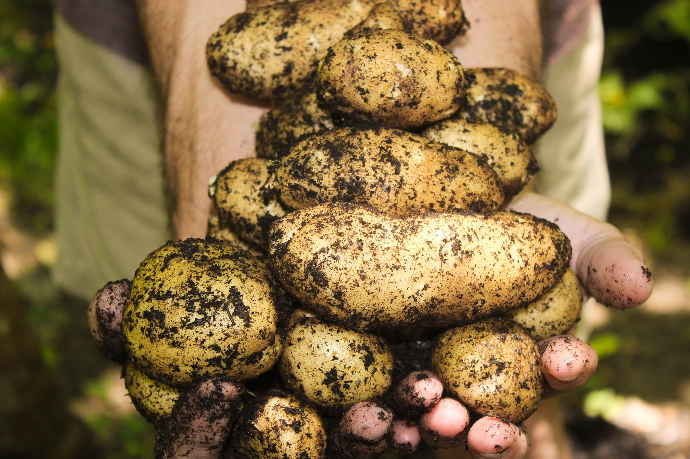
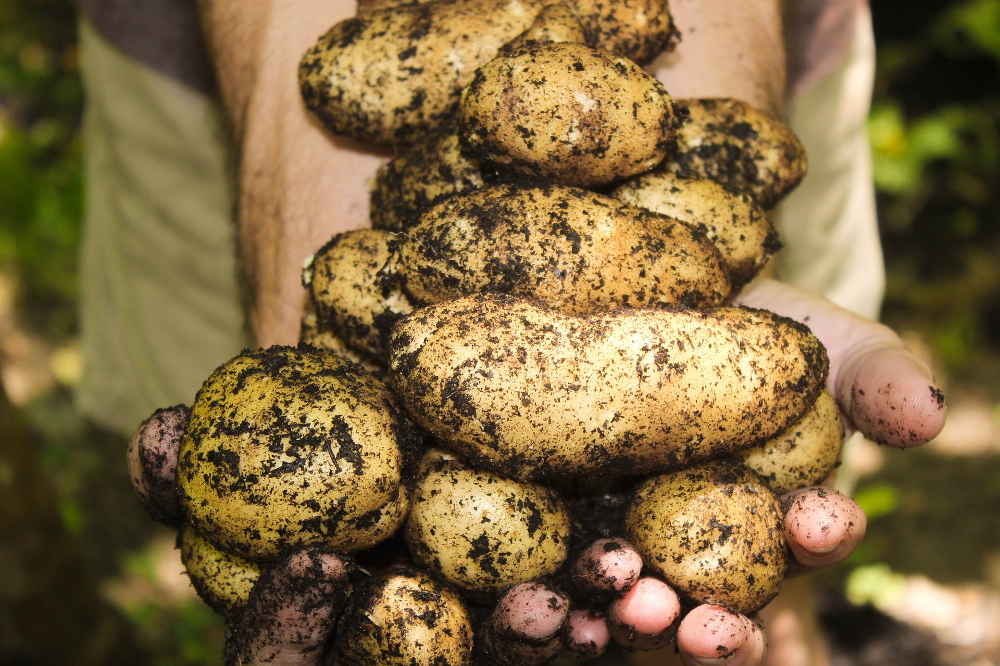
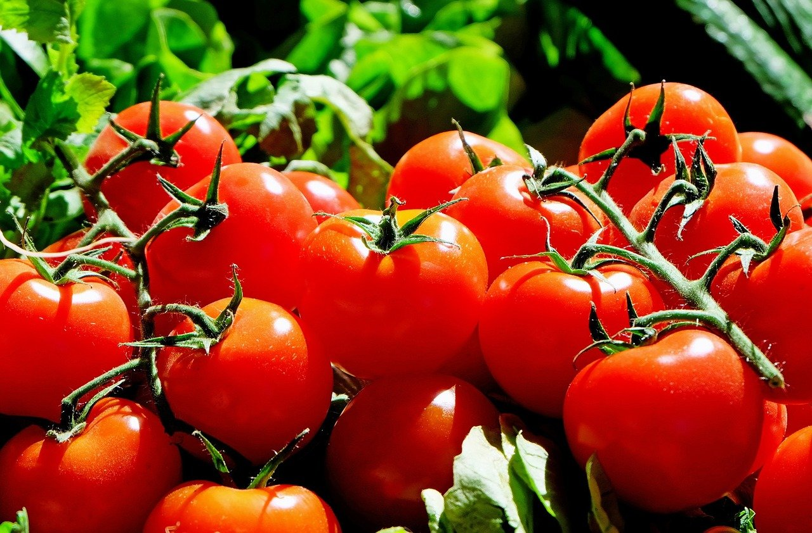
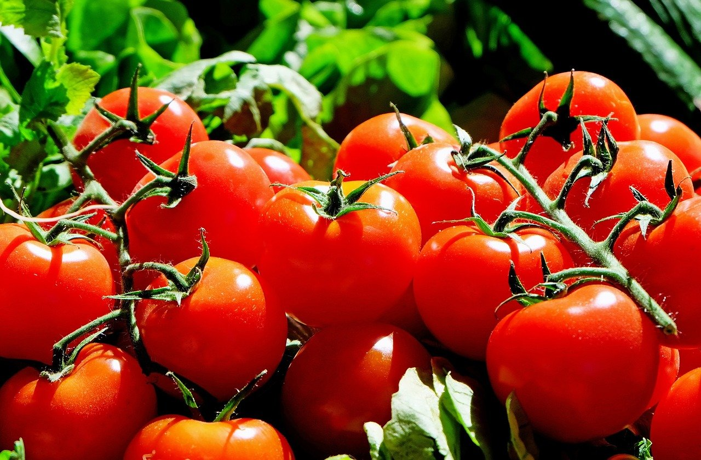

Our next harvest will be 06/13/2022! We will have corn, potatoes, carrots and tomatoes! Supplies are limited so reserve your order today!

We've got an ear for corn!
Only our most perfect corn specimen are sold at the market. We look to see if the husk is bright green and tight around the kernels, if the tensel hairs are brown and sticky. Any corn that don't meet those two standards are recycled and used as compost for next year's harvest!
Potatoes can power the future!
Whether it's feeding your body the carbohydrates it needs to provide you engery, or if some reasonable scientist realizes their true potential for alternative energy and makes the worlds largest potato battery. You can count on Bear Farms Potatoes for the highest quality potatoes!
 


Our carrots are perfect for your snowman!
Around 1940 there was Allied propaganda spreading stating that their pilots were able to see and shoot down german planes due to the pilots consuming an excess of, Carrots! While Vitamin A does help your eye sight, once your body has used all that it needs the remainder gets stored as fat. In reality the pilots were using their secret radar technology! Regardless, our carrots are top of the line in quality and taste!
"I want 'em real thick and juicy"
-Sir Mix-a-Lot
We only provide the best tomatoes! We don't let them leave the farm unless they are a nice deep red, firm and have absolutely no scarring.
 
